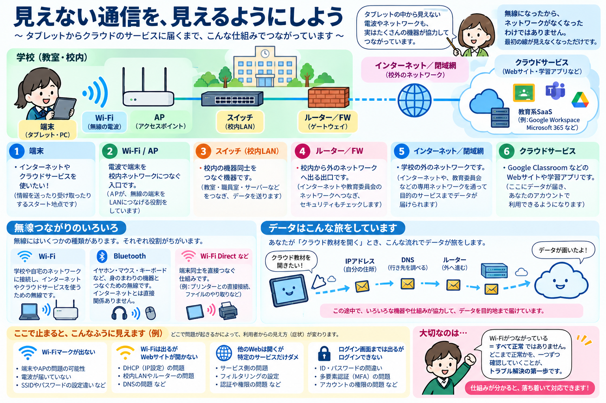

START
端末
PC・タブレット何をする？利用者が通信を始める場所です。Wi-Fi設定やネットワーク設定を持っています。
ここで問題があるとその端末だけつながらない、という形になりやすい。
ICT BASIC FITNESS / NETWORK
用語を暗記する前に、「端末からサービスまで、通信がどこを通っているか」を一本の地図として理解します。基礎は安定して学び、変わる情報はCURRENTとして別に更新します。
01 / BIG PICTURE
学校のネットワークは自治体によって構成が違います。最初に「ネットワーク分離」と「アクセス制御」という2つの考え方を見比べ、そのあと自分の自治体を7つの質問で読み解きます。

ネットワーク分離は「ネットワークを分ける」考え方、ゼロトラストは場所だけを信頼せずアクセスごとに確認する考え方です。SASEやMDMはゼロトラストそのものではありません。

7つに答えられれば、知らない自治体でもネットワーク構成を自分の言葉で説明するための入口ができます。
MEET THE NETWORK
「AP」「DHCP」「DNS」といった言葉は、最初から覚えていなくて大丈夫です。まずは、それぞれが何をする係なのか、そこで問題が起きると何ができなくなるのかを見てみましょう。
何をする？利用者が通信を始める場所です。Wi-Fi設定やネットワーク設定を持っています。
ここで問題があるとその端末だけつながらない、という形になりやすい。
何をする？端末をWi-Fiで校内ネットワークへつなぐ「無線の入口」です。
ここで問題があるとWi-Fiにつながらない、特定の教室だけ不安定、などが起こります。
何をする？IPアドレス、ゲートウェイ、DNSなど、通信に必要な設定を端末へ自動で渡します。
ここで問題があるとWi-Fiには接続したように見えても、正しく通信できないことがあります。
何をする？校内の端末やAPなどをつなぎ、LANの中で通信を中継します。
ここで問題があると特定の教室・フロア・系統だけ通信できないことがあります。
何をする？校内LANから別のネットワークへ通信を渡します。
ここで問題があると校内では通信できても、外部や別ネットワークへ進めません。
何をする？Webサイトなどの名前を、通信に使うIPアドレスへ結びつけます。
ここで問題があると回線自体は動いていても、名前を使ってWebサイトを開けないことがあります。
何をする？クラウドや教育委員会など、校外の通信先までデータを運びます。
ここで問題があると校内ネットワークは正常でも、外のサービスへ届きません。
何をする？学習アプリ、校務支援、Webサービスなど、利用者が最終的に使いたい機能を提供します。
ここで問題があるとインターネットは使えるのに、特定のサービスだけ使えないことがあります。
何をする？認証で「誰か」を確認し、認可で「何をしてよいか」を決めます。SSOやMFAもここに関係します。
ここで問題があるとサービスには届いているのにログインできない、ログイン後に必要な機能が使えないことがあります。

READ THE PICTURE
細かな用語を全部覚える前に、「何と何がつながっているか」を頭の中に描けることを目標にします。
タブレットからAPまでは電波でつながります。その先には、スイッチ、ルーター／FW、校外の回線など、見えない先にも通信の経路が続いています。
Wi-Fiは端末をネットワークへつなぐ方法の一つです。Wi-Fiにつながっていても、その先の経路やDNS、クラウドサービスなどに問題があれば目的のサービスは使えません。
「Wi-Fiが出ない」「Webは開く」「ログイン画面までは出る」など、できていることを確認すると、どこまで正常かを絞って考えられます。
名前 → 役割 → つながり → 止まったときの見え方の順で理解します。ここまで見えてから、IPアドレス・DHCP・DNSなどをもう少し正確に学びます。
NOW, DIAGNOSE
全部を一度に調べる必要はありません。目に見える現象から、正常だと分かるところと、まだ分からないところを分けます。
まず端末とAPの間を疑う。電波、接続先、端末側の設定などを確認する。
APより先へ進めているかを見る。IP設定、LAN、外への経路、DNSなどはまだ未確認。
インターネット全体より、サービス側・フィルタリング・経路など対象を絞って考えられる。
通信そのものより、アカウント、認証、MFA、権限などを確認する段階に近い。
この並びは「通信パケットが必ずこの順番で進む」という意味ではありません。障害時に、どの範囲まで正常かを考えるための確認地図です。
02 / FOUNDATION
ここからは用語を一つずつ暗記するのではなく、1台のタブレットがネットワークに参加するときに「何が必要になるか」を順に見ます。
NETWORK SETTINGS
ネットワークの中でデータを送り合うには、端末が自分の情報と、外へ出る方法、名前を調べる方法を知る必要があります。
「このネットワークでは、この設定を使ってね」と必要な情報を端末へ渡します。
※実際の環境では設定方法や構成が異なります。ここでは、学校でよく使われるDHCPによる自動設定を入口に仕組みを整理しています。
WHO AM I?
ネットワークでは、データの送り元や送り先を区別する必要があります。そのために使うのがIPアドレスです。
うまく設定できないと：Wi-Fiには接続していても、そのネットワークで正しく通信できないことがあります。
LOCAL OR OUTSIDE?
IPアドレスだけでは、「相手が自分と同じネットワークにいるのか、外にいるのか」を判断できません。その範囲を判断するための情報がサブネットです。
設定が合わないと：本来届くはずの相手を「外」と判断するなど、正しい経路を選べなくなることがあります。
HOW DO I GET OUT?
目的の相手が自分と同じネットワークにいないとき、端末は外へ向かう通信をゲートウェイへ渡します。学校ではルーターやFWなどが経路上に関係します。
ここへ渡せないと：校内の一部とは通信できても、インターネットや別ネットワークへ進めないことがあります。
WHERE IS IT?
人はWebサイトやサービスを名前で覚えますが、IP通信では通信先のIPアドレスが必要です。DNSは、名前に対応する通信先を調べる仕組みです。
名前解決できないと：ネットワークの経路自体は生きていても、普段使う名前ではWebサイトを開けないことがあります。
NOW DHCP MAKES SENSE
端末がネットワークに参加するたびに、利用者がIPアドレス・サブネット・ゲートウェイ・DNSを手入力するのは現実的ではありません。DHCPは、こうした通信に必要な設定を自動的に端末へ渡します。
NEXT CONCEPTS
無線端末をLANへつなぐ入口。Wi-Fiの電波が届くことと、その先の通信が正常なことは別です。
問い：無線区間だけの問題？スイッチは主にLAN内をつなぎ、ルーターは異なるネットワーク間の経路をつなぎます。
問い：どの区間まで通信できている？一度に運べる量と、応答にかかる時間は別です。同じ「遅い」でも原因の見方が変わります。
問い：足りないのは容量？ 応答性？Web通信を保護する仕組み。ただし、通信先の内容の正しさや、入力してよい情報まで保証するものではありません。
問い：通信の保護と情報の妥当性を混同していない？03 / TRAINING LADDER
ネットワークは用語暗記だけでは現場で使えません。「分かる」から「原因範囲を絞り、適切につなぐ」までを4段階で見ます。
KNOW
IP、DHCP、DNS、AP、ルーター等の役割を説明できる。
DISTINGUISH
似た状態や機器の役割を一括りにしない。
DIAGNOSE
正常・異常を比較し、端末・無線・LAN・DNS・サービス等のどこまで正常かを絞る。
SUPPORT / HANDOFF
権限境界を守り、確認済み情報と再現条件をそろえて担当者へ渡す。
04 / DIAGNOSE
いきなり設定を変えるのではなく、観察して影響範囲を絞ります。
自分だけ / 複数人 / 全員
この席 / 教室 / 校舎 / 学校全体
特定サイト / 全Web / ログイン / 動画 / 全通信
常時 / 特定時間 / 変更後 / 今日だけ
05 / CURRENT WATCH
規格、国の調査、学校向けの整備指針は変わります。ここは基礎知識と混ぜず、一次情報を確認して更新します。
FOUNDATION は概念が変わらない限り維持。CURRENT は文部科学省などの一次情報とIETF等の標準を定期確認し、「確認日」を表示します。新しい情報を自動で見つけても、意味づけは確認してから掲載します。
06 / CHECK
IP・DHCP・DNSを説明できるかではなく、「Wi-FiはつながるのにWebが開かない」と言われたとき、何を順番に確認するかを自分の言葉で言えるか確かめてみてください。
12問診断へ →